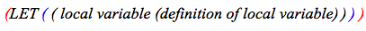

OpenMusic DocumentationHiérarchie de section : OM 6.6 User Manual > Lisp Programming > Introduction to Lisp
OpenMusic DocumentationHiérarchie de section : OM 6.6 User Manual > Lisp Programming > Introduction to Lisp
Navigation : page précédente | page suivante
Attention, votre navigateur ne supporte pas le javascript ou celui-ci à été désactivé. Certaines fonctionnalités de ce guide sont restreintes.
Introduction to Lisp
This section is not a Common Lisp tutorial, but just expounds a few important notions.
Origins
A Bit of History
Lisp is a functional language influenced by the lambda calculus that was specified in 1958. It is one of the oldest high-level programming languages.
Common Lisp is a Lisp dialect, among others such as Scheme .
An Interpreted Language
Lisp is an "interpreted" language : it works on top of a low-level process, or underlying interpreter, which evaluates Lisp code. Functions and data are defined and evaluated by this process, which incrementally enriches the running environment with new functionalities. Each time a new function, variable or class is defined, it becomes part of the environment. This characteristics makes Lisp programming very flexible and dynamic, since code can still be interpreted while Lisp programs are running.
Links of Interest
For a more complete overview of the language, the reader should consult specialized books or references. Here are some links of interest :
- Common Lisp the Language, 2nd edition : a reference book on the common Lisp standard by Guy L. Steele
- Lisp as a second language, composing programs and music : a music-oriented tutorial by Peter Desain and Henkjan Honing
S-expressions
S-expression stands for "symbolic expression". S-expressions are list-based representations. They are typically represented in text by parenthesized, whitespace-separated sequences of character strings.
Prefix Notation
Lisp expressions are written as lists with a prefix notation. The first element in the list is an operator or a function, while the remaining elements are treated as data : they are the arguments[1] of this operator.
When an expression is evaluated[2], the first element is applied to the arguments. For instance :
An addition such as 1 + 2 + 3 is expressed (+ 1 2 3) , which evaluates to : 6. The + function is applied to 1 2 and 3.
In the (list 1 2 3) expression, the list operator creates a list with the other elements in the expression, which evaluates to : (1 2 3)
Quoted Expressions : QUOTE Operator

The QUOTE operator " ' " allows to get a list from a lisp expression without evaluating it. This operator must be put before the targetted list first parenthesis, and applies to all the elements located between the pair of parenthesis.
For instance :
When the following expression : '(+ 5 6) is evaluated, (+ 5 6) is returned. The list is merely quoted.When the following expression (+ 5 6) is evaluated, 11 is returned. The list is evaluated, because there is no quote.
Lambda Expressions : the LAMBDA Operator

The LAMBDA operator binds – associates – variables to values in an expression. In other words, it allows to define functions.
The syntax of a lambda expression is : (lambda (arg1 arg2 ...) [body of the function] ) . This expression evaluates to a function, which can be applied to arguments. At application time, these arguments are bound to variables represented by arg1 , arg2 , ...
For instance, the lambda expression that defines (4 + (a * b)) with a and b as variables is written :
(lambda (a b) (+ 4 (* a b))) .
Functions
Defining Functions : DEFUN
Most Lisp programming consists into defining functions. DEFUN is a particular operator that defines a function bound to a name :
(defun my-function-name (arg1 arg2 arg3)
[ Lisp expression(s) ]
result )
Once the function is defined, its name represents the function.
Defining Local Variables within a Function : LET

LET is a special operator that "declares" local variables in the body of the function. The declaration and the content of the declaration must both be delineated by parenthesis.
For instance, the following expression declares an x local variable :
(let (( x (+ a 5)) ) means : x is a local variable, such as x = a + 5.
Example : Defining My-Function
Let's define "my-function". (defun my-function (a b c) (let ((x (+ a 5))) (* x (/ b c)))) |
We can also write it : (defun my-function (a b c) (let ((x (+ a 5))) (* x (/ b c)) ) ) |
In other words, the expression means : " my-function applies to a , b and c . Besides x = ( a + 5). This function is : x * (b / c) ." My-function is called when its name followed by the relevant set of arguments is evaluated : (my-function 1 2 3) => 4 |

|
Références :
Argument
An argument represents a parameter upon which a function operates. For instance, the (om+ x y) function has two arguments : x and y.
Evaluation
In Lisp, evaluating an expression amounts to interpreting and reducing its contents in order to return a result.
In OM, visual programs represent Lisp expressions and evaluating a box triggers the calculus that will determine the value of these expressions.
Any kind of box can be evaluated and return something. To evaluate a box, ⤷ Click and press
vorCmdclick on an outlet.
Plan :
Navigation : page précédente | page suivante
A propos...(c) Ircam - Centre Pompidou